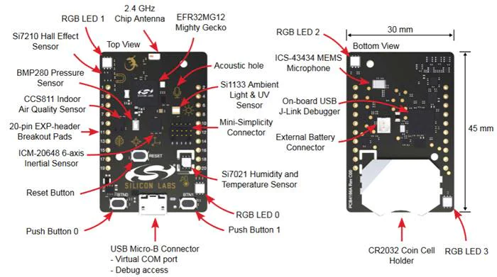
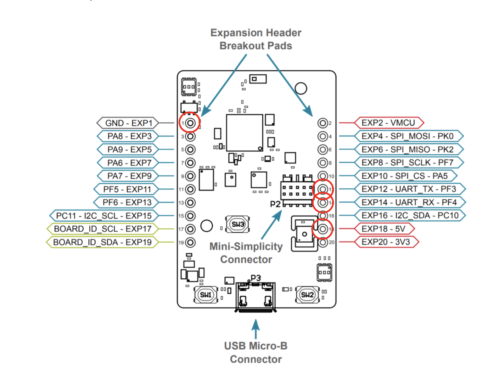

Project Description
This project was the most complex of the embedded software drivers that I have developed. Not only was the driver itself challenging, so was the application. In this project I was able to create a SPI driver and a device layer for the onboard Thunderboard Sense 2 accelerometer (ICM 20648). The driver uses the USART peripheral of the Mighty Gecko (Thunderboard Sense SOC). The application will request the value of the Z-direction of the accelerometer once every LETIMER0 period (2 seconds). This is used in order to determine if the board is pointing upward or downward. Upon the first read of facing downward, the RGB LED2 will turn GREEN and send a message via the HM-18 (UART bluetooth module) to your phone that the board is pointing downward. Then, upon the board being turned to the upward direction, a single notice will be sent that the board is now pointing up and the RGB LED 2 will turn off.
Board Pinout
Hardware Configuration
First, the HM-18 bluetooth module needs to be connected properly. Next, module needs to be powered via the 5V ouptut and have a ground connection to the Thunderboard. Then, the UART TX and RX pins need to be connected respectivly. In additon, a bluetooth terminal is needed in order to recieve transmissions via cellphone. For this project I used BLE Terminal, but any bluetooth compatible application should work.
Software Diagram
Doxygen
GitHub
Check out the code by clicking on the GitHub icon below! The file is a .sls and will need to be imported as a project in the Simplicty IDE.